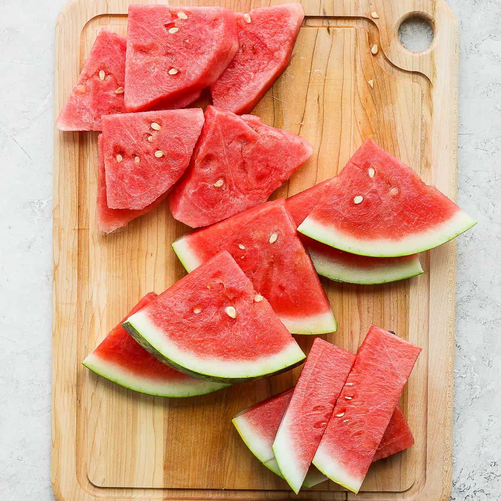
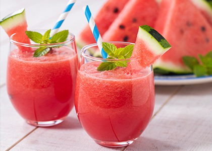
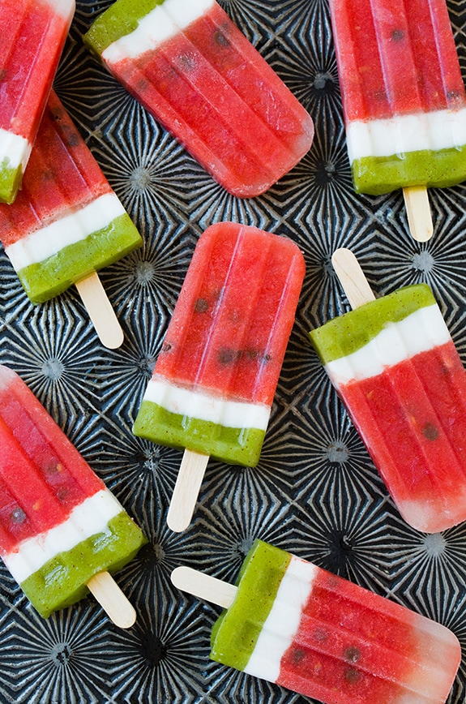

Cool ways to eat watermelon!
There are many ways to eat watermelon! Below I will list some of my favorites!
1. Watermelon slices

Watermelon slices are the most common way to eat watermelon! They are easy to make and very refreshing!
2. Watermelon juice

Watermelon juice is a very refreshing drink! It is very easy to make and tastes great!
3. Watermelon popsicles

Watermelon popsicles are a great way to cool down in the summer! They are very easy to make and taste great!
Go back to the main page!